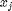
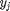
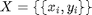
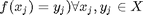
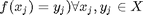
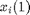
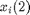
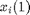
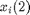

What is Pattern Recognition?
This document will provide a very brief introduction to the problem of pattern recognition and provide pointers on how to find out how the PRT can help solve your pattern recognition problems. The first sub-section provides a concise mathematical overview of the problem of pattern recognition, and the second sub-section provides a real-world example to make the mathematics more concrete.
Contents
A Brief Tutorial
Pattern recognition is the science of making inferences based on data. Two of the main forms of pattern recognition are classification and regression. In classification problems, data are collected and given discrete class labels. In a regression problem, on the other hand, data labels are typically continuous values, not categorical.
Basic pattern recognition approaches seek a function, f, that takes an observation  and predicts the unseen label,  :

The goals of learning in pattern recognition are to develop the function, f, given only a (possibly small) set of training data,  ,  . As such, pattern recognition is fundamentally an ill-posed problem, since it is trivially easy to define a function that performs arbitrarily well on the training data (  ).
. As such, pattern recognition is fundamentally an ill-posed problem, since it is trivially easy to define a function that performs arbitrarily well on the training data (  ).
Since learning in pattern recognition is ill-posed, a wide number of different algorithms have been proposed to map from a set of training data to a function capable of performing inference on new observations.
A complete review of pattern recognition approaches and techniques is beyond the scope of this document, but the interested reader is referred to some of our favorite books on the subject:
Duda, Hart, Stork, Pattern Classification http://www.amazon.com/Pattern-Classification-2nd-Richard-Duda/dp/0471056693
Bishop, Pattern Recognition and Machine Learning http://www.amazon.com/Pattern-Recognition-Learning-Information-Statistics/dp/0387310738
A Simple Example
Considering a simple example can often make the problem of pattern recognition clearer. Assume that we run a scrap metal processing yard, and we'd like to have a machine automatically sort pieces of scrap metal into different piles depending on if they are zinc or copper. As pieces of metal move down our conveyor belt, we use our Trusty ACME DensAndRef machine to measure the density of each piece of scrap, and it's reflectance at a particular wavelength (how much light the object reflects). As pieces come down the conveyor belt, we need to make decisions (copper or zinc) based on these two pieces of data.
Since we might know something ahead of time about the reflectance and densities of these two types of metal, it might make sense to make up some rules even if we haven't seen any data from our sensors. For example, we might develop an algorithm that says:
if (density < 0.15 lb/in^3) and (reflectance > 80%) object is aluminum
However making decision boundaries like this is an error-prone approach. First of all, we haven't incorporated any information about our actual sensing apparatus into these rules. It might turn out that our sensing apparatus has a strong bias, and all reflectances are measured at 1/2 their true reflectances. Or we might find out that our density measuring equipment has a large degree of noise, so that densities of very light objects are sometimes recorded as very large. Second, we haven't incorporated any information about the kind of data we might actually see. The equations above are suitable for accurate and precise measurements of pure metals, but is not suitable for detecting some amount of aluminum mixed in alloys with other components. To overcome these limitations, we need to have some training data.
Luckily, in most learning tasks, data will be available on which we can perform learning. This data will typically consist of N sets of observations and labels (or targets). Usually observation vectors are designated with x_{i} and targets or labels with y_{i}, where i indexes each observation/target pair. A set of N measurements can then be denoted  for i = 1...N. In our example, the
for i = 1...N. In our example, the  are 1 x 2 vectors where  is the mesaured density, and  is the measured reflectance.
are 1 x 2 vectors where  is the mesaured density, and  is the measured reflectance.  in our case is a binary variable where 0 represents "measured from copper", and 1 represents "measured from aluminum".
in our case is a binary variable where 0 represents "measured from copper", and 1 represents "measured from aluminum".
The goal now is, given some set of training data, how can we define a boundary between the two classes to optimally separate them and best tell aluminum from copper? This boundary will define our function,  .
.
For examples of how to use the PRT to solve this problem and other problems like it, take a look at the rest of the PRT documentation, especially: